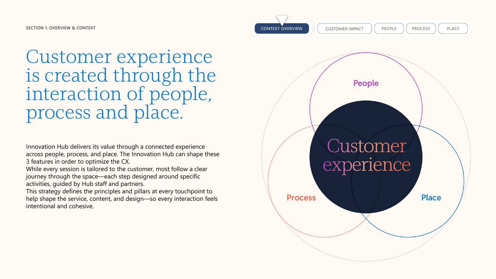
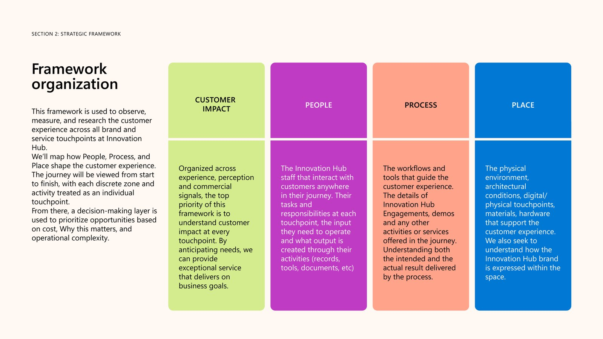
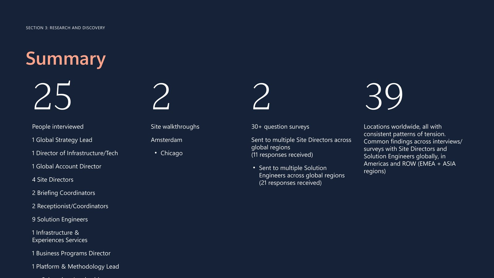
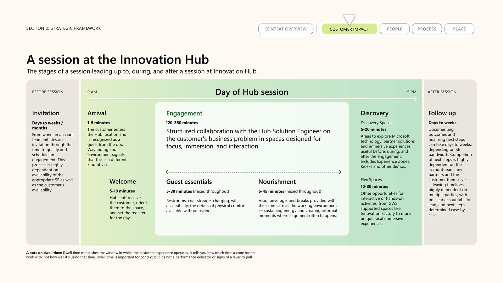
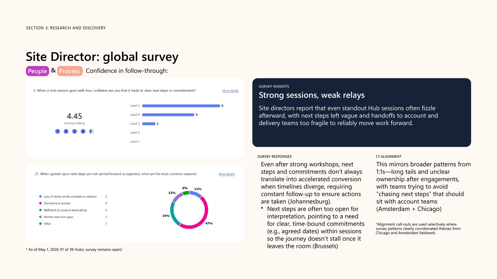
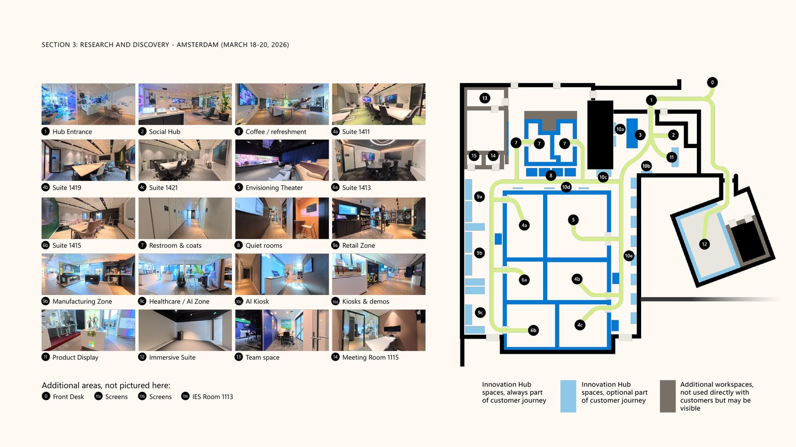
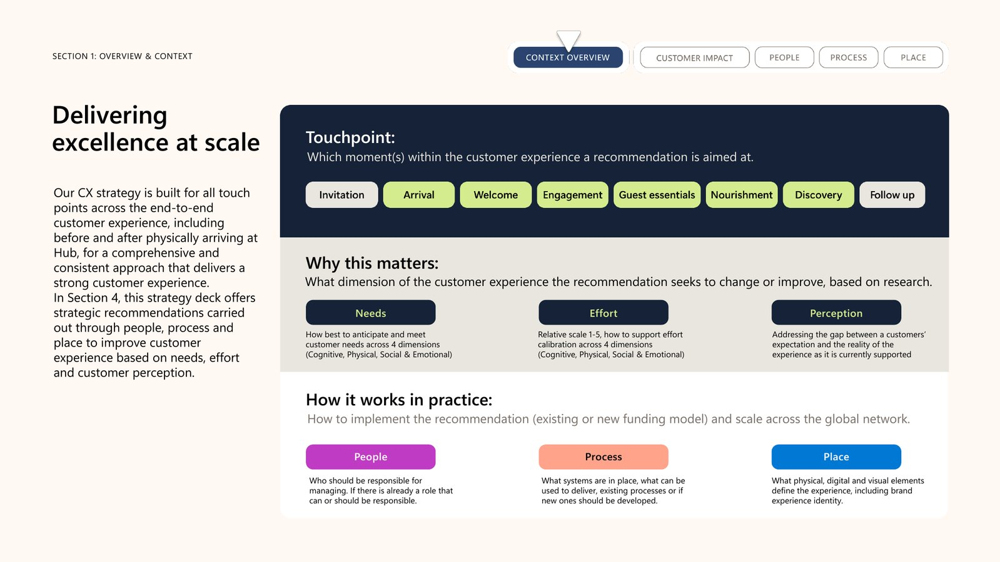
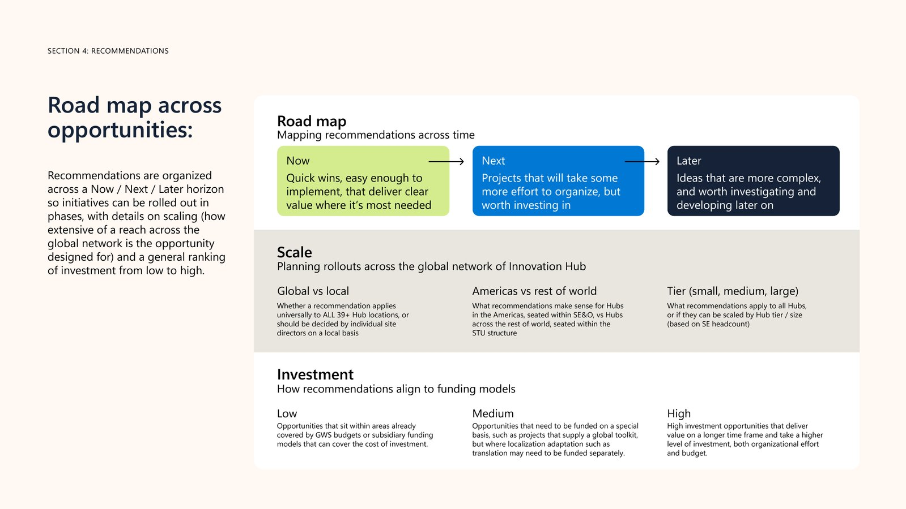
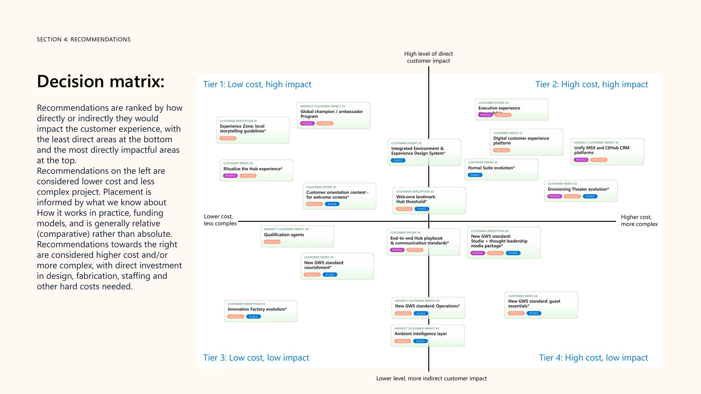
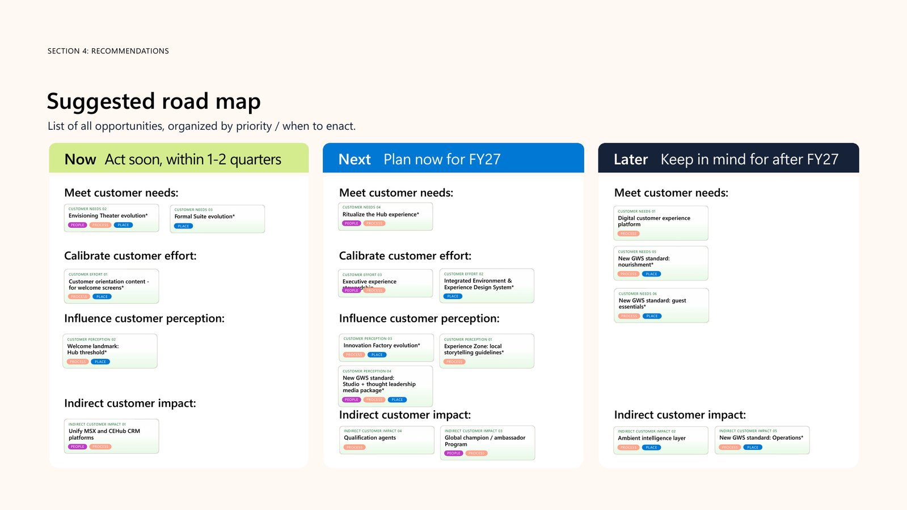

The Exceptional Hub Experience
Strong sessions, weak relays. An inside-out study of the people, processes and places behind 39 Innovation Hubs, and a plan to make every visit exceptional.
- Role
- Wrote the brief, led the research, owned the strategy
- Scope
- 39 Hubs across the Americas, EMEA and Asia, within the $2.5M+ global program I manage
- Outcome
- 5 of 18 recommendations funded within two quarters of delivery
About
The Innovation Hub is Microsoft's network of 39 customer experience centers, where senior customer teams work hands-on with Microsoft experts on their AI and cloud transformation. I set out to define what an exceptional Hub experience should be, measure where today's falls short, and build the plan to close the gap. I wrote the brief, led the research and steered the strategy from kickoff to final delivery, with an external design research team supporting execution.
Context
At the Hub, the experience is the product. A customer's day runs from the invitation through arrival, welcome, the working session, a shared meal and discovery, to follow-up, and every one of those moments either builds their confidence in Microsoft or quietly chips away at it. I framed the customer as a guest and the Hub as host, and judged each moment on three things: are their needs anticipated, is the effort we ask of them worth it, and does their view of Microsoft grow as the day unfolds.
- 39 global Hubs, each with its own unique layout
- 10–20 decision makers per session, from C-suite to architects
- 3+ visits per customer journey, each booked about 6 weeks ahead
What happened
I designed this as an inside-out study of the host side: the people, processes and places Microsoft controls. Site Directors and Solution Engineers sit in customer sessions week after week, so they became our expert witnesses. We walked every customer touchpoint on site ourselves, then tested what we saw at two Hubs against the whole network. Validating the findings directly with customers is the natural next phase.
- 25 in-depth interviews, from Solution Engineers to global leaders
- 2 site walkthroughs, in Amsterdam and Chicago
- 2 global surveys: 11 Site Directors and 29 Solution Engineers responded
- A competitive review of how hyperscalers, AI labs and consultancies host their customers
Results
The finding held in every region: the sessions in the room are strong, but the experience around them doesn't keep pace. The work produced a reusable framework for designing, measuring and funding the Hub experience everywhere, and a prioritized plan to fix it.
- 91% of Site Directors trust a good session to produce next steps, yet unclear ownership causes 47% of stalls
- 83% of Solution Engineers act as trusted advisors, but 69% say their KPIs miss long-term customer impact
- Physical space is the top investment priority, at 40% of Solution Engineer responses
- 18 recommendations sequenced on a Now, Next, Later roadmap
- 5 of 18 recommendations funded within two quarters of delivery